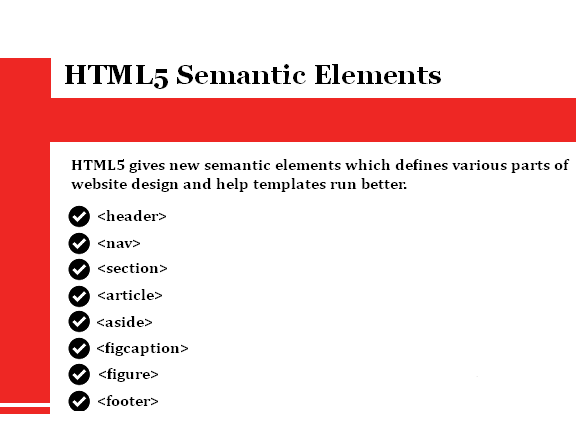

HTML stands for Hyper Text Markup Language. It is a markup language which is use to make webpages and add textual content in it.In this, we can do markup like we can do our text "bold", italic, underline and so on. We can do our text to make hypertext by making that text in between anchor tag as linking it to another page by just clicking that text that let us to another web page. Example:- Click me to go to GOOGLE.


HTML5 Semantic Tags. Examples of semantic HTML tags include nav, footer and section. Header element – The header element defines content that should be considered the introductory information of a page or section. Nav element – Main navigation menu links would all be placed in a nav tag. But sub navigation menus elsewhere on the page could also get one. Main tag – The body of a page should go in the main tag – not sidebars and main navigation. There should be only one per page. Article element – The article element defines self-contained content that could stand independently of the page or site it’s on. For example, a blog post. Section element – Using section is a way of grouping together nearby content of a similar theme. A section tag differs to an article tag because it isn’t necessarily self-contained. Aside element – An aside element defines content that’s less important. It’s often used for sidebars – areas that add complementary but not vital information. Footer element – You would use footer at the base of a page or section. It might include contact information and some site navigation.
• HTML produces the static code means it displays only that content which we write. • Html can display Web Pages with a wide range of colours, shapes and objects. • HTML is easy to use and learn. • HTML is not case sensitive language or we can say not a true programming language. • Supported on almost every browser.